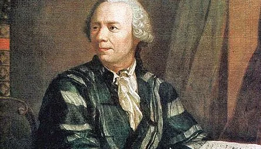

ASIGNATURA DE MATEMÁTICAS
ISABELLA MEDINA RAMIREZ
SARAH CASTAÑEDA MONTOYA
8-4
LEONHARD EULER
El matemático y físico suizo Leonhard Euler (1707-1783) hizo descubrimientos en una amplia gama de campos, incluyendo geometría, cálculo infinitesimal, trigonometría, álgebra, teoría de números, física de continuum, teoría lunar y teoría de grafos, para nombrar unos pocos.
Familia
Hijo de Marguerite Brucker y Paul Euler, clérigo. Tuvo dos hermanas pequeñas, Anna Maria y Maria Magdalena, y un hermano menor, Johann Heinrich.
Estudios
A los trece años se matriculó en la Universidad de Basilea y en 1723 recibió el título de maestro de Filosofía, con una disertación que comparaba las filosofías de Descartes y Newton. Siguiendo los deseos de su padre estudió teología, griego y hebreo. Recibió clases del matemático suizo Johann Bernoulli, quién descubrió su talento para las matemáticas. En 1726, con tan solo diecinueve años, se graduó Doctor
Matemático
En el año 1727, invitado por la emperatriz de Rusia Catalina I, fue miembro del profesorado de la Academia de Ciencias de San Petersburgo. Catedrático de Física en 1730 y de Matemáticas en 1733. En 1741 fue profesor de matemáticas en la Academia de Ciencias de Berlín a petición del rey de Prusia, Federico el Grande.
Aportaciones
En su Introducción al análisis de los infinitos (1748), realizó el primer tratamiento analítico completo del álgebra, la teoría de ecuaciones, la trigonometría y la geometría analítica.
Trató el desarrollo de series de funciones y formuló la regla por la que solo las series convergentes infinitas pueden ser evaluadas adecuadamente. También abordó las superficies tridimensionales y demostró que las secciones cónicas se representan mediante la ecuación general de segundo grado en dos dimensiones. Introdujo las funciones beta y gamma, y estudió algunas ecuaciones diferenciales.
Poseedor de una asombrosa facilidad para los números y el raro don de realizar mentalmente cálculos de largo alcance. Se recuerda que, en una ocasión, cuando dos de sus discípulos, al realizar la suma de unas series de diecisiete términos, no estaban de acuerdo con los resultados en una unidad de la quincuagésima cifra significativa, se recurrió a Euler. Este repasó el cálculo mentalmente, y su decisión resultó ser correcta.
Estableció los fundamentos de la mecánica analítica, especialmente en su Teoría de los movimientos de cuerpos rígidos (1765). Realizó también aportaciones a la astronomía, la óptica y la acústica. Entre sus obras más destacadas se encuentran Instituciones del cálculo diferencial (1755), Instituciones del cálculo integral (1768-1770) e Introducción al álgebra (1770)
Uno de los matemáticos más prolíficos de la historia. En su época de mayor producción, de 1727 a 1783) pudo completar hasta 800 páginas de artículos. Se calcula que sus obras completas podrían ocupar entre 60 y 80 volúmenes, aunque buena parte de su obra aún no se ha sido recopilada. La labor de recopilación y publicación de sus trabajos, Opera Omnia, comenzó en 1911 y hasta la fecha se han publicado 76 volúmenes.
francos suizos y en numerosos sellos postales suizos, alemanes y rusos.
Obras
Mechanica, sive motus scientia analytica exposita (1736)
Tentamen novae theoriae musicae (1739)
Solutio problematis ad geometriam situs pertinentis (1741)
Methodus inveniendi líneas curvas maximi minimive proprietate gaudentes, sive solutio problematis isoperimetrici latissimo sensu accepti (1744)
Introductio in Analysis Infinitorum (1748)
Institutiones Calculi Differentialis (1765)
Theoria motus corporum solidorum seu rigidorum (1765)
Institutiones Calculi Integralis (1768-1770)
Vollständige Anleitung zur Algebra42 (1770)
Lettres à une Princesse d'Allemagne (1768–1772)
Muerte
Perdió parcialmente la visión antes de cumplir 30 años y se quedó casi ciego al final de su vida. Regresó a San Petersburgo en 1766, donde murió el 18 de septiembre de 1783

LA ESTADISTICA
En la actualidad la Estadística se ha constituido en una herramienta importante en los procesos de investigación, puesto que permite planear la investigación, recolectar, organizar, representar, interpretar y analizar la información referente a individuos u observaciones de un fenómeno al cual se le estudian
La estadística estará presente en nuestras vidas y nos permitirá llegar a una información más precisa y clara sobre nuestros temas de interés
La incorporación de la estadística, ofrece herramientas metodológicas que permiten al estudiante desarrollar competencias para la recolección de datos, organización y tabulación de la información, comparación de fenómenos, análisis de variables, interpretación (construcción y lectura de tablas y gráficos)
Los conceptos estadísticos nos facilitan la solución de problemas en diversos contextos. En otras palabras, el sustento estadístico permite fortalecer los procesos de toma de decisiones adecuadas. Proceso de toma de decisiones estadísticas. lo tanto, permite que el problema sea resuelto con mayor eficacia y eficiencia.
Un tema que me gustaria investigar en la institución utilizando la estadistica es saber el porcentaje de estudiantes de nuestra institucion que han consumido sustancias de drogas y con eso no solo hacer la encuesta si no ayudarlos a salir de ese problema tan grande pero para eso necesitariamos un porcentaje de los mas de 1500 estudiantes que hay en el DEM
CONSULTA SEGUNDO PERIODO MATEMÁTICAS
¿Que es un Moninomio?
En matemáticas, un monomio es una expresión algebraica en la que se utilizan incógnitas de variables literales que constan de un solo término, y un número llamado: «coeficiente». Las únicas operaciones que aparecen entre las letras son el producto y la potencia de exponentes naturales.
Se denomina grado de un monomio a la suma de los exponentes de las letras. Ejemplo: En el ejemplo anterior: , observamos: Los coeficientes son 3 ; -2 ; y 8 respectivamente Tienen grado 2, grado 3 y grado 5, respectivamente (como ya sabemos, cuando el exponente es 1 no se escribe).
En el monomio x3, el coeficiente es 1 y la parte literal es x3 . También se considerará como un monomio a aquel que sólo tiene parte numérica. De esta forma, 8 por ejemplo, sería un monomio. Cuando forma parte de otra expresión más compleja, como por ejemplo 2x + 8 , diremos que es el término independiente.
Partes de un monomio
Un monomio tiene 3 partes principales:
Coeficiente
Literales
Exponentes
Se describen las partes de un monomio en el siguiente ejemplo:
2ab3
mas ejemplos de moninomios
ab2
xyz
4x2y
mn5
4p2q2r2
8r4s5u3
10fgh2
9wxy3z
3abc
4mnop4
Que es un Binomio?
En álgebra, un binomio consta únicamente de una suma o resta de dos monomios
Un binomio es un polinomio con dos términos. Por ejemplo, x − 2 x-2 x−2 y x-6 son binomios.
Hoy, la idea de ‘binomio’ ha sobrepasado el mundo del álgebra y las matemáticas. Se le llama binomio a la combinación de dos nombres en el marco de cualquier actividad humana. Todo aquello que esté compuesto por el nombre de alguien y el de otra persona es un binomio, y se aplica sobre todo en el mundo político, también en el deportivo y el artístico o del espectáculo.
¿Binomios algebraicos
(34*A + B/23)
(12 – 263/3)
½ (5 + 14*G)
(43 A + 1/3 * B ) 2
(114 + 42) 3
¿Que es un Polinomio?
En matemáticas, polinomio es una expresión algebraica formada por la suma de varios monomios o términos, cada uno de los cuales es el producto de: un coeficiente constante y de valor conocido
Un polinomio completo tiene todos los términos desde el término independiente hasta el término de mayor grado. Un polinomio está ordenado si los monomios que lo forman están escritos de mayor a menor grado. Dos polinomios son iguales si verifican: 1Los dos polinomios tienen el mismo grado .
¿Cuáles son los tipos de polinomios ejemplos?
Qué significa clases de polinomios en Matemáticas
Polinomio de grado cero. P(x) = 2.
Polinomio de primer grado. P(x) = 3x + 2.
Polinomio de segundo grado. P(x) = 2x2+ 3x + 2.
Polinomio de tercer grado. P(x) = x3 - 2x2+ 3x + 2.
Polinomio de cuarto grado. P(x) = x4 + x3 - 2x2+ 3x + 2. Monomio. }
Si los términos son del mismo signo, los coeficientes se suman y se conserva el signo. Si los términos son del mismo signo, los coeficientes se suman y se conserva el signo. Si los términos son de diferente signo, los coeficientes se restan y se conserva el signo del coeficiente más grande
Por ejemplo: 9, 9x, 9xy son todos términos
 GRAFICA EJEMPLAR DE UN POLINOMIO
Suma de polinomios
Para realizar la suma de dos o más polinomios, se deben sumar los coeficientes de los términos cuya parte literal sean iguales, es decir, las variables y exponentes (o grados) deben ser los mismos en los términos a sumar.
Para saber cómo sumar polinomios es fundamental que las variables y exponentes estén ordenados. El primer paso consiste en ordenar los polinomios de mayor a menor. Ahora se deberán agrupar los monomios con el mismo grado. Finalmente, se procede a sumar los monomios semejantes.
GRAFICA EJEMPLAR DE UN POLINOMIO
Suma de polinomios
Para realizar la suma de dos o más polinomios, se deben sumar los coeficientes de los términos cuya parte literal sean iguales, es decir, las variables y exponentes (o grados) deben ser los mismos en los términos a sumar.
Para saber cómo sumar polinomios es fundamental que las variables y exponentes estén ordenados. El primer paso consiste en ordenar los polinomios de mayor a menor. Ahora se deberán agrupar los monomios con el mismo grado. Finalmente, se procede a sumar los monomios semejantes.
GRAFICA EJEMPLAR DE UN POLINOMIO
Suma de polinomios
Para realizar la suma de dos o más polinomios, se deben sumar los coeficientes de los términos cuya parte literal sean iguales, es decir, las variables y exponentes (o grados) deben ser los mismos en los términos a sumar.
Para saber cómo sumar polinomios es fundamental que las variables y exponentes estén ordenados. El primer paso consiste en ordenar los polinomios de mayor a menor. Ahora se deberán agrupar los monomios con el mismo grado. Finalmente, se procede a sumar los monomios semejantes.